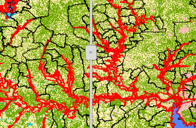
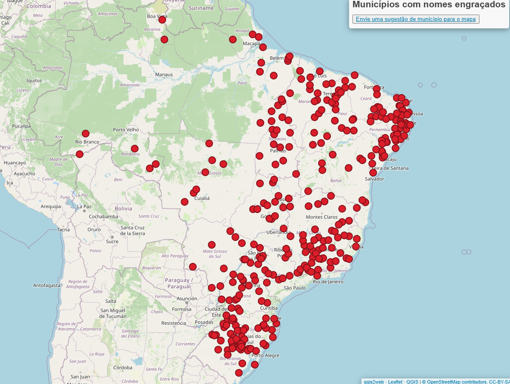
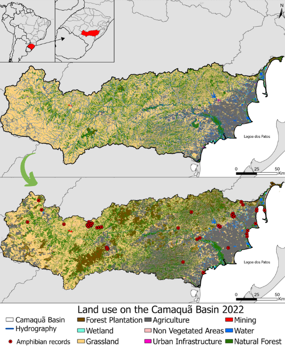

Mapas temáticos, storymaps, webapps e otras cositas mas.
(portfolio em constante contrução)

Uso e cobertura do solo nas bacias tributárias do Guaíba e área alagada durante a enchente de maio de 2024
Comparação dos anos de 1985 e 2023 no uso e cobertura do solo nas bacias tributárias do Guaíba com ênfase para a área alagada nas enchentes de maio de 2024

Municipios com nome engraçado HTML
Compilado de municipios com nome engraçado e projeto para aprender HTML

Mapa com mudanças no uso do solo e pontos de amostragem de anfíbios
na bacia do rio Camaquã